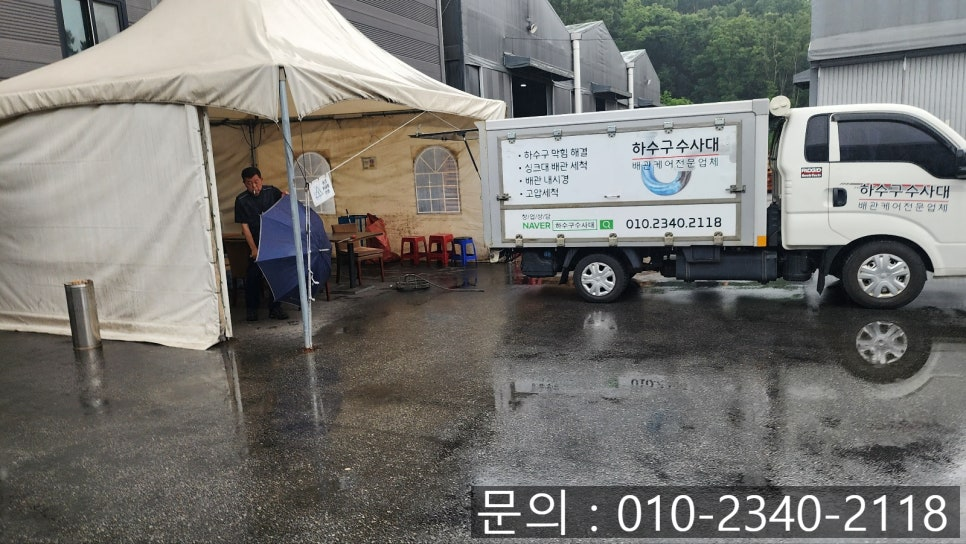
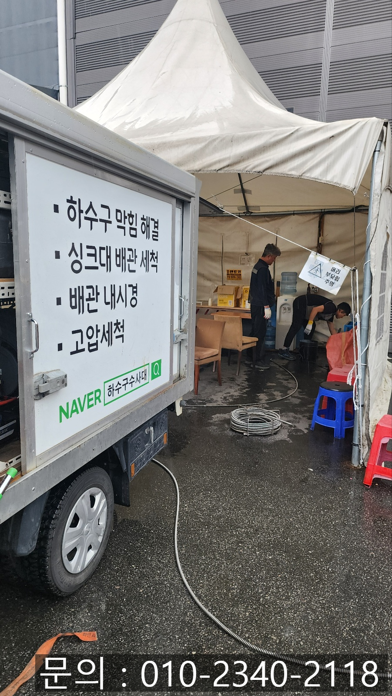
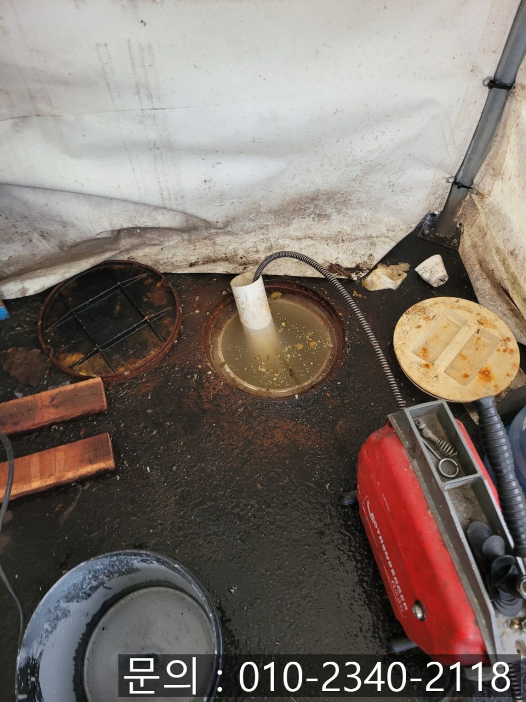
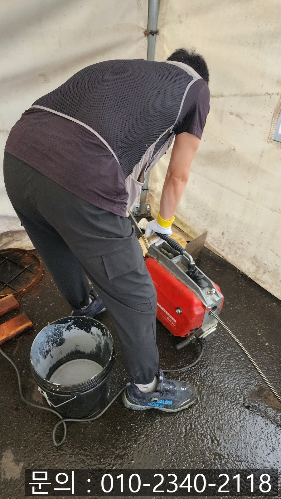
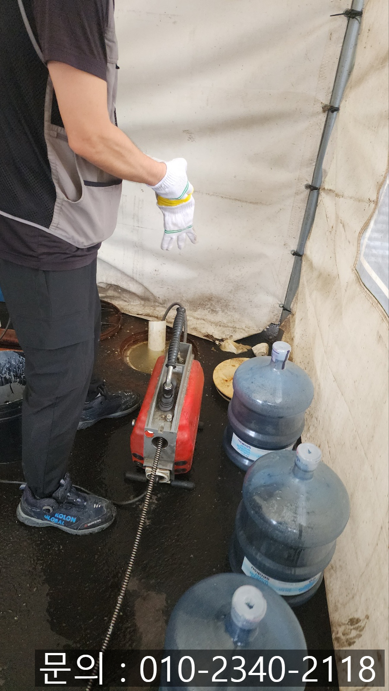
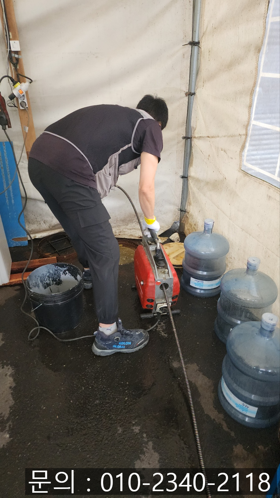

🏠 정남면 하수구 막힘 화성 팔탄면 공장 화장실 배관 역류 고압세척
화성 팔탄 하수구막힘 전문 시공 후기

📋 작업 개요
- 위치: 화성 팔탄, 팔탄, 화성
- 서비스 유형: 하수구막힘, 배관막힘, 역류해결, 뚫는업체, 배관청소, 고압세척
- 작업 일시: 2025. 7. 6. 22:23
- 업체명: 하수구수사대 (010-5615-2118)
🔍 문제 상황
안녕하세요.
정남면 하수구 막힘, 화성 팔탄면 공장 화장실 배관 역류 고압세척 현장에 다녀온 하수구 다큐입니다.
대형 컨테이너 공장단지는 수십 명에서 많게는 수백 명의 직원들이 하루 종일 근무하는 공간입니다.
이처럼 많은 사람들이 사용하는 공간의 화장실 배관의 경우 다른 곳에 비해 많은 오염물과 이물질이 유입되기 때문에, 관리가 제대로 되지 않게 되면 정남면 하수구 막힘이나 역류 문제가 발생하게 됩니다.
최근 하수구 다큐가 화성 팔탄면 공장 화장실 배관 역류로 인해 고압세척을 다녀온 현장 역시 그런 사례 중 하나였어요.
대형 컨테이너 공장 외부 바닥에 위치한 하수구 배관에서 오수가 역류하며, 내부 화장실 사용에 문제가 발생해 많은 직원들이 불편을 겪고 있었습니다.
직접 작업하면서 촬영한 사진을 보여드리면서 화성 팔탄면 공장 화장실 배관 역류 고압세척 현장을 소개해 드리겠습니다.

🔎 원인 분석
💡 전문가 진단: 정밀 진단 장비를 사용하여 슬러지의 고착 여부를 판명하고 타격/세척 작업을 실시했습니다.
여러 동의 대형 컨테이너 사이에 직원들의 임시 쉼터가 만들어져 있었는데요.
그런데 쉼터 바닥에서 악취가 진동하고 하수구 역류로 인해 다급하게 연락 주셨습니다.
신속하게 필요한 장비를 챙겨 현장으로 달려가 보니 고객님께서 말씀해 주셨던 것처럼 육안으로 보기에도 심각한 상태였어요.
정남면 하수구 막힘으로 인해 바닥에 위치한 뚜껑을 열어보니 오수가 빠지지 못하고 가득 차 있는 상태였습니다.
이렇게 많은 양의 이물질이 가득 차 있는 경우 배관 전용 내시경을 진입시켜도 원인 파악이 어렵다 보니 전동 스프링을 이용해 통수 작업을 진행하기로 했어요.
전동 스프링 장비는 배관 내부에서 회전식 스프링이 강하게 밀어내며 뚫어주는 장비인데요.
굴곡이 많은 배관 구조에도 유연하게 진입할 수 있다는 큰 장점을 가지고 있습니다.

🔧 작업 과정
하지만 스프링 사이즈 정도의 구멍만 내주는 정도이다 보니 배관에 쌓여있는 모든 이물질을 제거하는 데는 역부족이에요.
전동 스프링을 이용해 배관을 막고 있는 이물질에 구멍을 내주고 고여있는 물들을 모두 빠지게 만든 다음 막힘의 원인을 파악하기로 합니다.
정남면 하수구 막힘으로 문제가 발생된 배관 내부에 고여있는 물이 모두 빠져나가고 내시경 카메라를 진입시켜 근본적인 원인을 파악해 보기로 했습니다.
예상했던 대로 많은 양의 기름 슬러지와 각종 오물이 배관 내부에 오랜 시간 쌓여 꽉 막혀있는 상태였어요.
내시경 카메라를 이용해 촬영한 배관 내부의 모습을 고객님께 직접 확인 시켜드리고 다양한 작업 방법을 설명해 드린 다음 고압세척 장비를 이용해 배관 청소를 진행하기로 했습니다.
화성 팔탄면 공장 화장실 배관 역류 고압세척 현장에서 사용하게 될 고압세척기는 강한 수압으로 배관 내부 벽면에 쌓인 모든 이물질을 깨끗하게 씻어내는 장비입니다.
워낙 높은 압력의 물을 짧은 시간 쏟아내 쌓여 있는 이물질을 청소하는 장비이다 보니 넓고 긴 배관, 이물질이 많이 쌓여있는 배관 청소에 탁월한 장비입니다.
하지만 아무리 높은 압력을 이용해 청소를 진행해도 배관 내부를 점검하지 않으면 안 되겠죠?
내시경 카메라를 이용해 이물질이 쌓여있는 위치를 파악해 가며 고압세척 작업을 이어나갔습니다.
여러 차례 반복적인 청소 작업을 통해 깨끗해진 배관 내부를 확인할 수 있었어요.
고객님께서도 직접 눈으로 보시고도 신기해하실 정도였습니다.
공장, 식당, 상가, 주택, 사무실 등 배관에서 역류나 악취, 물 막힘 등의 문제가 발생하게 되면 전문적인 장비를 갖춘 업체를 통해 정확한 진단과 상황에 맞는 맞춤 작업이 필요합니다.


✅ 작업 완료
지금 하수구 막힘으로 고민하고 계신다면 연락 주세요.
완벽하게 해결해 드리겠습니다.
경기도 화성시 향남읍 상신하길로328번길 26 5층 505호 5호




⚠️ 하수구 배관 막힘 예방 및 관리 가이드
- ✅ 머리카락, 비닐, 물티슈 등 물에 분해되지 않는 이물질은 하수구 유입을 절대 금지해 주세요.
- ✅ 하수구 거름망을 씌우고 모여진 이물질은 주기적으로 쓰레기통에 바로 비워주셔야 합니다.
- ✅ 배관 노후가 심할 경우 이물질이 더 쉽게 걸리므로 주기적인 배관 세척(고압세척 등)을 권장합니다.
- ✅ 작업 후 1년 이내 재발 시 하수구수사대에서 무상 A/S 보증 서비스를 제공합니다.
💡 핵심 정리
- 확실한 장비 작업(내시경 점검 및 샤프트 스케일링)으로 원인을 뿌리 뽑습니다.
- 작업 후 1년 이내에 동일한 부위 재발 시 100% 무상 A/S 서비스를 보장합니다.
- 서울 · 경기 · 인천 전 지역에 24시간 언제든 긴급 출동할 수 있도록 항시 대기 중입니다.
❓ 자주 묻는 질문 (FAQ)
🚨 화성 팔탄 하수구막힘 문제로 고민이신가요?
정확한 원인 진단과 확실한 시공으로 재발 없는 해결을 약속드립니다.
24시간 긴급 출동 | 서울 · 경기 · 인천 전지역 | 1년 내 재발 시 무상 A/S